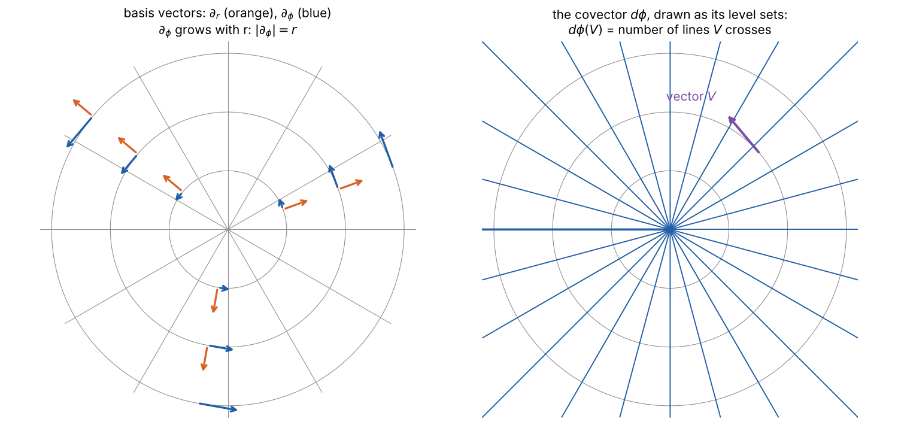

Part 1 defined vectors on a manifold as directional derivatives. Physics needs more than vectors. The electromagnetic field, the stress inside a material, and the curvature of spacetime are all quantities that take several directions and return a number. Tensors are the general framework for such quantities, and the only one in which laws can be written without reference to a choice of coordinates.
Metrics: From Distance to the Metric Tensor explains the two meanings of “metric”, how an inner product becomes a matrix of components, and how the same space looks in different charts, with an interactive explorer.
Covectors
The cotangent space \(T^*_pM\) is the dual of \(T_pM\): the vector space of linear maps \(\omega: T_pM \to \mathbb{R}\). Its elements are covectors (also called one-forms or dual vectors).
The basic example is the differential of a function. For \(f \in C^\infty(M)\), define
\[ df_p(V) = V(f). \]
It eats a direction and returns the rate of change of \(f\) in that direction: it is the gradient, made coordinate-free.
The differentials of the coordinate functions are a basis of \(T^*_pM\), dual to the basis \(\partial_\mu\):
\[ dx^\mu(\partial_\nu) = \partial_\nu x^\mu = \delta^\mu_{\ \nu}, \]
where \(\delta^\mu_{\ \nu}\) is 1 when \(\mu = \nu\) and 0 otherwise. Any covector can be written \(\omega = \omega_\mu dx^\mu\), with components \(\omega_\mu = \omega(\partial_\mu)\), and then \(df = \partial_\mu f\,dx^\mu\): the components of \(df\) are the partial derivatives of \(f\).
A covector applied to a vector gives \(\omega(V) = \omega_\mu V^\mu\). Applying a covector to a vector, or a vector to a covector, are the same pairing, and needs no metric.
Transformation law. Since \(dx^\nu = \frac{\partial x^\nu}{\partial x'^\mu} dx'^\mu\),
\[ \boxed{\omega'_\mu = \frac{\partial x^\nu}{\partial x'^\mu}\,\omega_\nu .} \]
This is the inverse of the vector law. Vector components transform with the matrix \(\partial x'/\partial x\), covector components with \(\partial x/\partial x'\), so that the number \(\omega_\mu V^\mu\) is the same in every chart. That is why vector components carry their index up and covector components down: a summed pair of indices, one up and one down, always makes something independent of coordinates.

Tensors
A tensor of type \((k, l)\) at \(p\) is a multilinear map \[ T: \underbrace{T^*_pM \times \dots \times T^*_pM}_{k} \times \underbrace{T_pM \times \dots \times T_pM}_{l} \to \mathbb{R}. \] It takes \(k\) covectors and \(l\) vectors, and is linear in each argument separately. A tensor field assigns one to each point, smoothly.
Some familiar cases:
| Type | Object | Example in general relativity |
|---|---|---|
| (0, 0) | scalar | temperature, proper time along a curve |
| (1, 0) | vector | four-velocity |
| (0, 1) | covector | gradient of a scalar field |
| (0, 2) | bilinear form | the metric \(g\) (Part 3) |
| (1, 1) | linear map \(T_pM \to T_pM\) | the identity \(\delta^\mu_{\ \nu}\) |
| (2, 0) | the inverse metric \(g^{\mu\nu}\) | |
| (1, 3) | the Riemann curvature tensor (Part 5) |
Tensor product. If \(S\) is of type \((k, l)\) and \(T\) of type \((m, n)\), then \(S \otimes T\) is the \((k + m, l + n)\) tensor that feeds the first arguments to \(S\), the rest to \(T\), and multiplies the results. Products of basis elements give a basis:
\[ T = T^{\mu_1 \dots \mu_k}{}_{\nu_1 \dots \nu_l}\; \partial_{\mu_1} \otimes \dots \otimes \partial_{\mu_k} \otimes dx^{\nu_1} \otimes \dots \otimes dx^{\nu_l}, \]
with components \(T^{\mu_1 \dots \mu_k}{}_{\nu_1 \dots \nu_l} = T(dx^{\mu_1}, \dots, dx^{\mu_k}, \partial_{\nu_1}, \dots, \partial_{\nu_l})\). In \(n\) dimensions, a type \((k, l)\) tensor has \(n^{k+l}\) components. The Riemann tensor in four dimensions has 256, though its symmetries cut the independent ones to 20 (Part 5).
Transformation law. Each index transforms as its type requires, independently:
\[ T'^{\mu}{}_{\nu} = \frac{\partial x'^\mu}{\partial x^\alpha}\frac{\partial x^\beta}{\partial x'^\nu}\,T^{\alpha}{}_{\beta}, \]
and similarly for any number of indices. This follows directly from the multilinear definition, by expanding each basis element in the new basis.
Why physics is written in tensors
Suppose a law takes the form \(T^{\mu}{}_{\nu} = 0\) in some chart. In any other chart, the transformation law gives \(T'^{\mu}{}_{\nu}\) as a linear combination of the components \(T^{\alpha}{}_{\beta}\), all of which vanish. So \(T'^{\mu}{}_{\nu} = 0\) too.
More generally, if two tensors are equal in one chart, they are equal in all. A law of physics written as an equation between tensors is automatically independent of the coordinates used to describe it. This is the precise content of general covariance, and the reason Einstein spent years learning tensor calculus from his friend Marcel Grossmann.
Operations on tensors
Contraction. Summing an upper index against a lower one reduces type \((k, l)\) to \((k - 1, l - 1)\):
\[ S^{\mu}{}_{\nu\rho} \;\longmapsto\; S^{\mu}{}_{\mu\rho}. \]
The result is a tensor: the transformation matrices of the two contracted indices are inverse to each other and cancel. The trace of a matrix is the simplest contraction. Contracting two indices of the same kind, both up or both down, is not allowed without a metric, and does not give a tensor.
Symmetry. A \((0, 2)\) tensor splits into symmetric and antisymmetric parts:
\[ T_{\mu\nu} = T_{(\mu\nu)} + T_{[\mu\nu]}, \qquad T_{(\mu\nu)} = \tfrac12(T_{\mu\nu} + T_{\nu\mu}), \qquad T_{[\mu\nu]} = \tfrac12(T_{\mu\nu} - T_{\nu\mu}). \]
Symmetry is preserved by change of coordinates. The metric is symmetric. The electromagnetic field tensor \(F_{\mu\nu}\) is antisymmetric. Totally antisymmetric \((0, p)\) tensors, the differential forms, have their own calculus, with the exterior derivative \(d\) generalising grad, curl and div.
Index rules. Every valid tensor equation obeys three rules, which make errors easy to spot:
- each free (unsummed) index appears exactly once in every term, at the same height;
- each summed (dummy) index appears exactly twice in a term, once up and once down;
- dummy indices can be renamed freely: \(V^\mu\omega_\mu = V^\nu\omega_\nu\).
Not everything with indices is a tensor
Tensor densities. The Levi-Civita symbol \(\tilde\epsilon_{\mu\nu\rho\sigma}\), equal to \(\pm 1\) or \(0\) according to the permutation of its indices, has the same components in every chart, so it does not transform as a tensor. Under a change of coordinates it picks up a factor of the Jacobian determinant. Such objects are tensor densities. With a metric, they can be converted into true tensors, and \(\sqrt{|\det g|}\, d^4x\) becomes the invariant volume element used to write the action of general relativity.
The partial derivative of a vector. This is the important failure. Take the components \(\partial_\mu V^\nu\) and change coordinates:
\[ \partial'_\mu V'^\nu = \frac{\partial x^\alpha}{\partial x'^\mu}\partial_\alpha\!\left(\frac{\partial x'^\nu}{\partial x^\beta} V^\beta\right) = \frac{\partial x^\alpha}{\partial x'^\mu}\frac{\partial x'^\nu}{\partial x^\beta}\,\partial_\alpha V^\beta \;+\; \underbrace{\frac{\partial x^\alpha}{\partial x'^\mu}\frac{\partial^2 x'^\nu}{\partial x^\alpha\,\partial x^\beta}\,V^\beta}_{\text{not tensorial}} . \]
The first term is the tensor law. The second appears whenever the transformation is not linear, which on a curved manifold is always. The reason is geometric: \(\partial_\mu V^\nu\) compares the vector at two neighbouring points, but those vectors live in different tangent spaces, and the manifold provides no way to compare them.
The polar plane shows it plainly. The constant vector field \(\partial_x\) has polar components \((\cos\phi, -\sin\phi/r)\), which vary from point to point, so their partial derivatives are not zero, although the field does not change at all. Fixing this needs an extra structure, a connection, which says how to carry a vector from one tangent space to the next. That is Part 4. First, Part 3 adds the metric, which, among other things, picks out a natural connection.
Summary
- Covectors are linear maps on vectors. The differentials \(dx^\mu\) form the basis dual to \(\partial_\mu\).
- A type \((k, l)\) tensor is a multilinear map of \(k\) covectors and \(l\) vectors. Its components transform with one factor of \(\partial x'/\partial x\) per upper index and one of \(\partial x/\partial x'\) per lower index.
- An equation between tensors holds in every chart if it holds in one: general covariance.
- Contraction and symmetrisation give new tensors. The Levi-Civita symbol is a density, not a tensor.
- The partial derivative of a vector field is not a tensor, because it compares vectors in different tangent spaces.
References
- S. M. Carroll, Spacetime and Geometry, chapters 1–2.
- R. M. Wald, General Relativity, section 2.3.
- B. Schutz, A First Course in General Relativity, 2nd edition (Cambridge, 2009), chapters 3 and 5.
- J. M. Lee, Introduction to Smooth Manifolds, chapters 11–12.
Code: src/gr: figs12.py and check12.py.